Section 4.4 Differentiation Using Computer Algebra
As we noted in
Chapter 1, in this book we are limiting ourselves to mathematical tools that the student can reasonably expect to find in a generic work environment. That is one of the reasons for focusing on using spreadsheets and Excel. However, we will also look at using free web tools, particularly as a means of doing symbolic manipulation. Differentiation is one of those operations that can be done with free tools available on the web. The student in this course will be expected to routinely do symbolic differentiation by hand. However, it is good to be able to check your work. We also want tools that will work reliably with messier problems.
In working with derivatives, we have looked at three basic problems:
Given a function, find a formula for its derivative. A related question is finding the marginal function.
Given a function, find the value of the derivative at a particular point. We do this when we want a rate of change at a particular point.
Given a function, find where the derivative is 0. We do this when we are trying to find minimum or maximum values of the function.
Example 4.4.1. A simple derivative with Alpha.
Use Wolfram|Alpha to find the derivative of \(x^3+5x+7\text{.}\)
Solution.
When you call the website, you get an input bar much as you would with your favorite search engine.
The interface for Wolfram|Alpha is rather robust. While Wolfram|Alpha lets you use a Math Input pallette, we can ask the question in plain English. In our case, we would like to find the derivative of \(x^3+5x+7\) with respect to \(x\text{.}\) Some of the ways of asking that question are:
find the derivative of (x^3+5x+7)
find the derivative of (x^3+5x+7) with respect to x
derivative of (x^3+5x+7)
differentiate (x^3+5x+7) with respect to x
differentiate (x^3+5x+7)
D (x^3+5x+7)
d/dx (x^3+5x+7)
(x^3+5x+7)’
For all of these, the website provides the same answer.
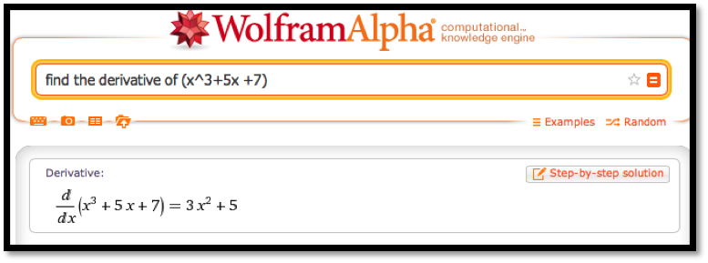
Note that the response tells us the question that Wolfram|Alpha is answering. This helps us check that we have been properly understood.
It is worthwhile to note that Wolfram|Alpha has an option to show step-by-step solutions with a paid subscription. Alternatives can be found by searching for "symbolic derivative calculator".
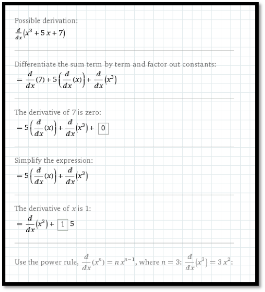
Wolfram|Alpha understands the convention that the variable for math problems is typically \(x\text{.}\) If we don’t specify the variable with respect to which we are differentiating, it will guess that \(x\) is our variable. Other letters are treated as constants unless we use function notation with parentheses. Thus we can use Wolfram|Alpha to check our differentiation rules.
Example 4.4.2. Recalling the quotient rule.
Use Wolfram|Alpha to recall the quotient rule.
It should be noted that Wolfram|Alpha will not work with long variable names like Principal or MonthlyPayment. We simply need to change variables to work with Wolfram|Alpha.
Example 4.4.3. Working with long variable names.
The cost of widgets is given by:
\begin{equation*}
\cost=2000+10*\quantity+.001*\quantity^2\text{.}
\end{equation*}
Find the rate of change of cost with respect to quantity when \(\quantity=1000\text{.}\) (We are using the derivative to estimate the marginal cost.)
Solution.
Since we will use Wolfram|Alpha, we want to convert the equation to use single letter variables:
\begin{equation*}
c=2000+10*q+.001*q^2\text{.}
\end{equation*}
We can input this as c=2000+10*q+.001*q^2.
We want to evaluate the derivative with respect to \(q\) when \(q=1000\text{.}\)
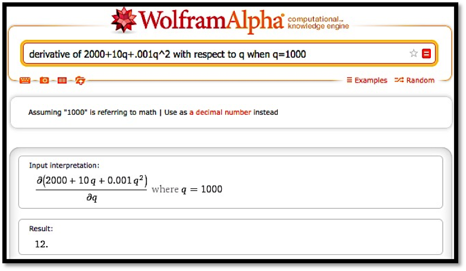
Thus, when \(\quantity=1000\text{,}\) increasing production by 1 widget increases cost by $12.
The third basic derivative problem was to find a maximum or minimum. For extrema problems, we want to find where the derivative is 0, since the extrema can only occur at endpoints and critical points.
Example 4.4.4. Exploring a business example.
The cost and demand price functions of widgets are given by:
\begin{align*}
\cost\amp =2000+10*\quantity+.001*\quantity^2\\
\revenue\amp =\frac{100*\quantity}{1+.01*\quantity}\text{.}
\end{align*}
Find the quantity that maximizes profit.
Solution.
We simplify variable names to \(q, c, p\text{,}\) and \(r\) for quantity, cost, profit and revenue, respectively. Our formula for profit is:
\begin{equation*}
p=r-c=100q/(1+.01q)-(2000+10q+.001q^2 )\text{.}
\end{equation*}
When looking for a maximum, we always start by looking at a graph of the function in question.
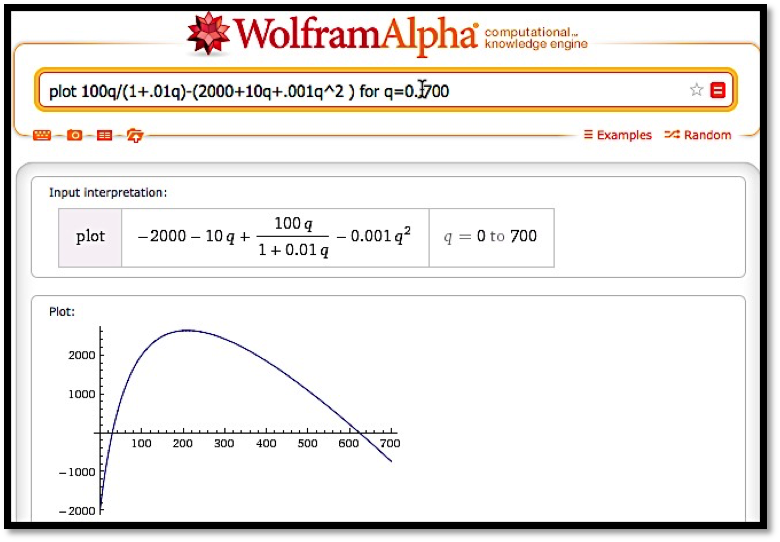
From the graph, it is clear that we have a single maximum for the profit function and it occurs near \(q=200\text{.}\) To find this point, we want to take the derivative and set it equal to zero, or we want to use the solve command on the derivative. We enter the command
solve(derivative 100q/(1+.01q)-(2000+10q+.001q^2 ) with respect to q)
.
We need to do a bit of interpretation since Wolfram|Alpha is using numerical methods with complex numbers. In particular, the answers have a zero imaginary part. We are also looking for a positive number. Thus, we conclude profit is maximized at 209.8 widgets.
In looking at free software on the web for taking derivatives we started with Wolfram|Alpha because we can use it throughout the book when Excel does not solve our needs. It is also supported by the company that produces Mathematica®, so it should stay available for the foreseeable future. Another useful source are the solvers from Symbolab
https://www.symbolab.com/solver 2 . Symbolab has a collection of solvers for the topics in this course.
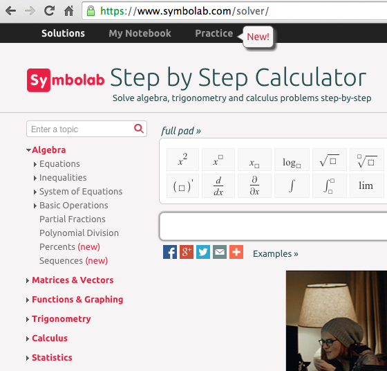
It also has a section that lets you do drill and practice with the techniques we have learned. Like Wolfram|Alpha, it gives the option of step-by-step solutions. I find the site a bit more user friendly for math students.
For individual problems we may want to use other software. For finding derivatives, a quick web search found
http://www.derivative-calculator.net/ 3  which is nicer if you are simply checking your work. As with Wolfram|Alpha, the derivative calculator shows you the problem in math form so you can check your syntax.
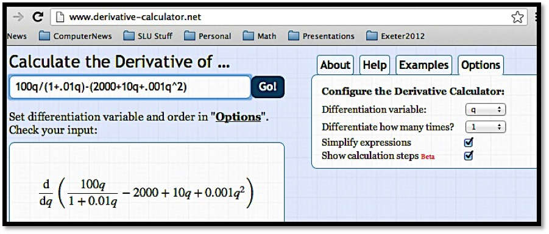
However, the show steps formatting is nicer since hovering over one step shows the change for that step in the next line.
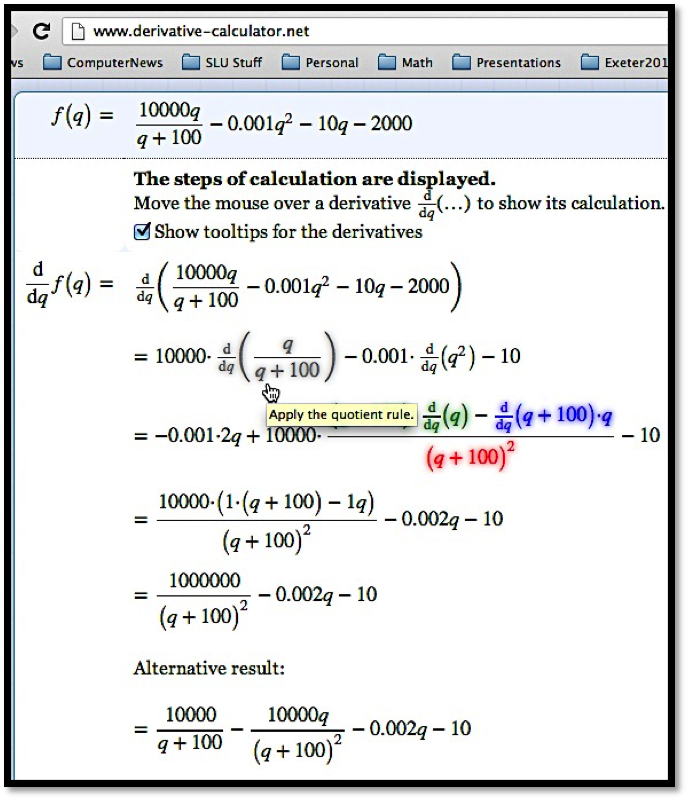
You may find other websites for doing derivatives as well.
Reading Questions Reading Check
1. Reading check, Differentiation Using Computer Algebra.
Exercises Exercises: Differentiation Using Computer Algebra Problems
Exercise Group.
Find the derivative of the given function.
1.
\(f(x)=x \ln(x)\)
Solution.
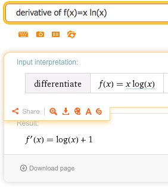
So \(f' (x)= \ln(x)+1\text{.}\)
2.
\(g(t)=e^{.07t} (-t^2+3t+5)\)
3.
\(h(t)=t^2 e^{-0.06t}\)
Solution.
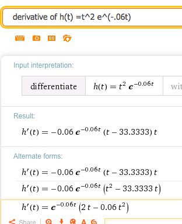
Wolfram returns several forms (they differ by some simple algebra). We can choose the one that has the form we find most useful. In this case we could choose for instance:
\begin{equation*}
h' (t)=e^{-0.06t} (2t-0.06 t)^2\text{.}
\end{equation*}
It’s a nice compact answer that avoids decimal approximations.
4.
\(k(x)=(2x+5)^{37}\)
5.
\(m(x)=\ln(\ln(\ln(x^2+3)))\)
Solution.
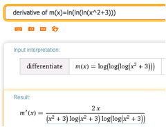
Wolfram writes ln as log but still means base \(e\text{.}\) The common log of x would be log(10,x). To stick with our notation we would say
\begin{equation*}
m'(x)=\frac{2 x}{(x^2+3)ln(x^2+3)ln(ln(x^2+3))} \text{.}
\end{equation*}
Note that Wolfram allows us to copy the text. Hover over the answer and under “A†and you will find plaintext that can be copied. This can be edited into a word document or an Excel document.
6.
\(n(x)=\frac{e^x}{\ln(x^2+3)}\)
7.
\(\price=10-\frac{\quantity}{100} -\frac{\quantity^2}{10000}\)
Solution.
Wolfram does not work well with whole word variables. Edit the equation (you can do this in Wolfram) and let \(\price = P(q)\) and \(quantity = q\text{.}\) This gives the following derivative:
8.
\(\revenue=\quantity*\left(20*.9^{(\quantity/200)}\right)\)
9.
\(\Sprice=10*1.04^{(\quantity/100)}\)
Solution.
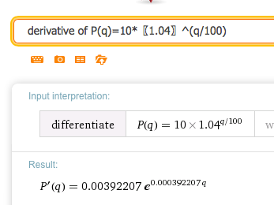
Going back to the original notation we have
\begin{equation*}
SupplyPrice'(q) = 0.00392207 (1.04)^{q/100}\text{,}
\end{equation*}
where \((1.04)^{0.01}=e^{0.000392207}\text{.}\)
10.
\(\text{ConsumerSurplus}=10*(0.95)^{(\quantity/100)}-2*(1.07)^{(\quantity/100)}\)
11.
\(k(x)=f(x)*g(x)*h(x)\)
Solution.
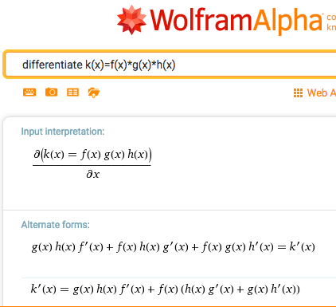
\begin{equation*}
k'(x)=g(x) h(x) f'(x) + f(x) h(x) g'(x) + f(x) g(x) h'(x) \text{.}
\end{equation*}
12.
\(k(x)=f(f(f(x)))\)
Exercise Group.
Evaluate the definite derivative at the given point.
13.
\(f(t)=t^2 e^{(-0.06t)}\) at \(t=10\text{.}\)
Solution.
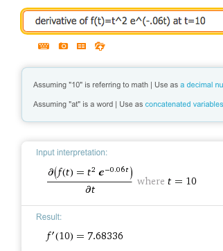
\begin{equation*}
f' (10)=7.68336\text{.}
\end{equation*}
14.
\(g(x)=x^2+6x+10\) at \(x=5\text{.}\)
15.
\(h(q)=(\ln(q+5) )*(1.07^q)\) at \(q=8\text{.}\)
16.
\(\Dprice=20*(0.95)^{(\quantity/100) }\) at \(\quantity=200\text{.}\)
17.
\(\Sprice=20*(1.09)^{(\quantity/100)}\) at \(\quantity=300\text{.}\)
Solution.
Rewriting the function as \(P(q)=20*(1.09)^{(q/100)}\) we get:
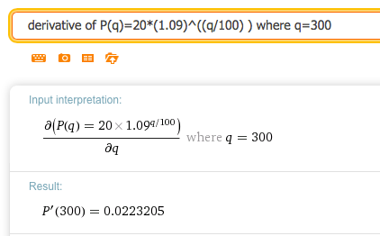
18.
\(\revenue=\quantity*(20-\quantity/500)\) at \(\quantity=2000\text{.}\)
19.
\(h(x)=f(g(x))\) at \(x=4\text{.}\)
Exercise Group.
Find the critical points of the given function. Identify each as a local minimum, local maximum, or neither.
20.
\(f(x)=x^3-5x^2+7x-2\text{.}\)
21.
\(r(q)=q*100*(0.9)^q\text{.}\)
Solution.
We find the critical point by solving: Solve (derivative of q*100*(.9)^q)= 0
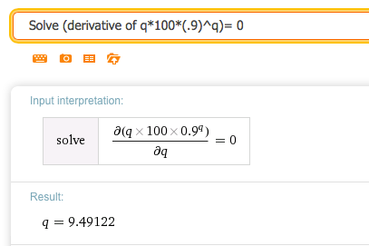
Then we plot the original function. We want to know if \(q = 9.49122\) is a max, min or neither. So graph over the interval \([1,20]\text{:}\)
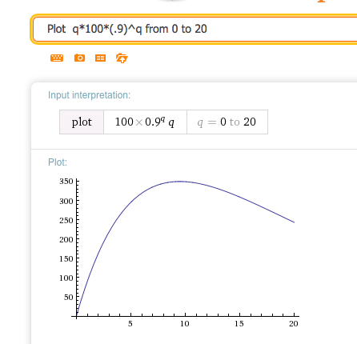
So the function has a local maximum at \(q = 9.49122\)
22.
\(\text{TotalCost}=100000+5*\text{OrderSize}+4*10000/\text{OrderSize}\text{.}\)
23.
\(\revenue=20*\quantity-(\quantity^2)/100\text{.}\)
Solution.
Wolfram shows that the critical point is at \(q = 1000\text{.}\)
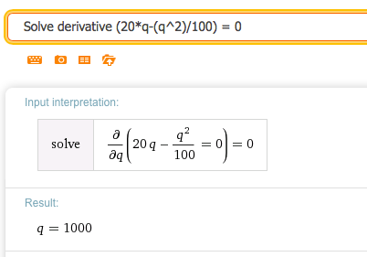
Graphing the original function from 0 to 2000 shows the critical point is a maximum.
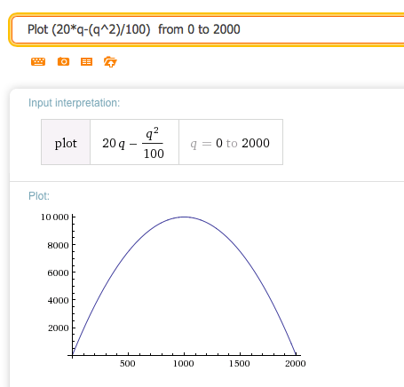
24.
\(\revenue=\quantity*20*(0.95)^{(\quantity/100)}\text{.}\)
25.
\(\profit=\quantity*20*(0.95)^{(\quantity/100) }-(1000+10*\quantity)\)
Solution.
We set the derivative equal to 0. The general answer is complicated but the real valued answer is what we are looking for.
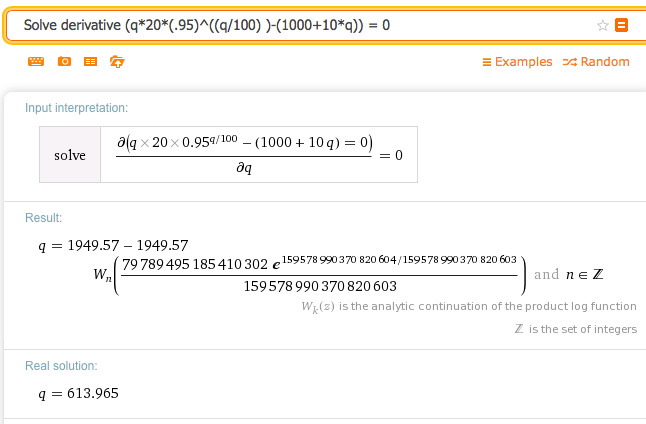
So the critical point is at \(q = 613.965\text{.}\)
We want to graph over some interval that contains \(q = 613.965\text{.}\) Big pictures are usually nice, so let’s choose the interval \([0,1500]\text{.}\)
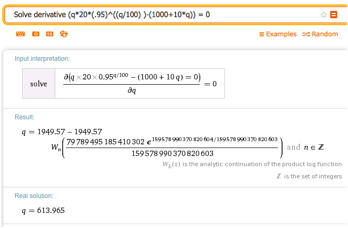
The function has a (local) maximum at the critical point.